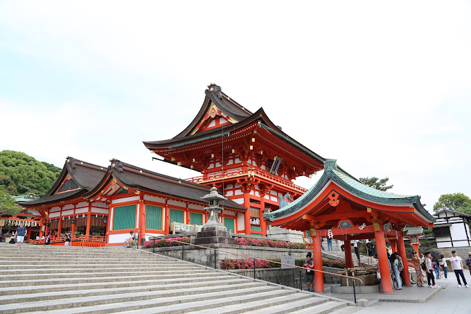
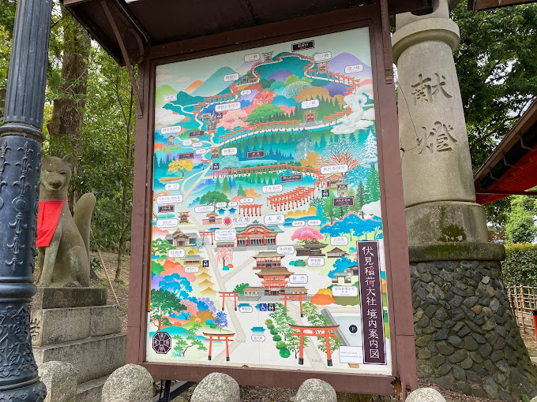
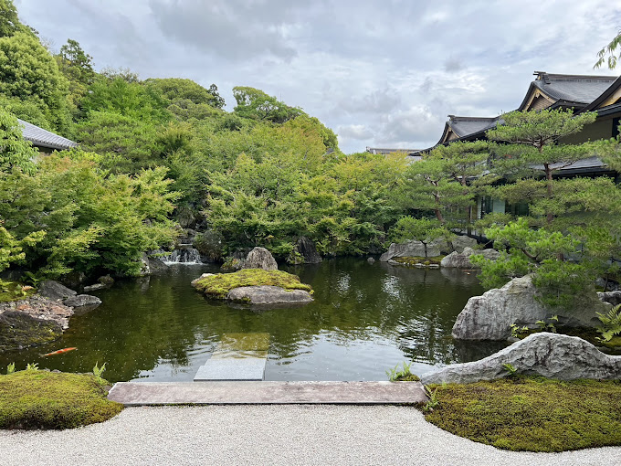
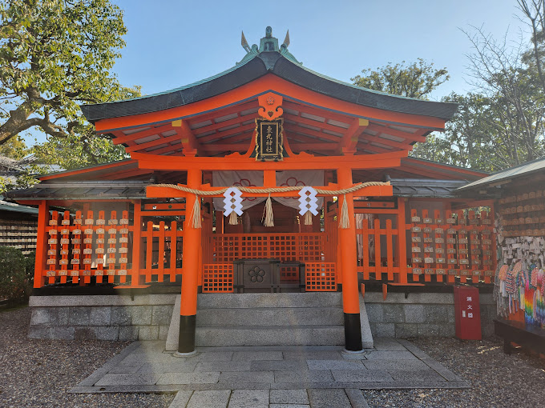
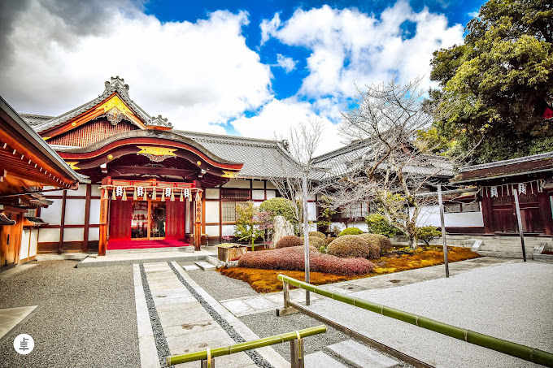
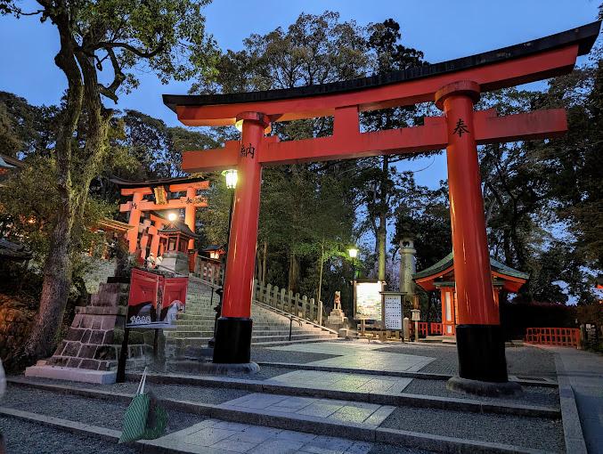

TOURIST SPOT
FUSHIMI
• Fushimi Inari-taisha is the head shrine of the kami Inari, located in Fushimi-ku, Kyoto, Kyoto Prefecture, Japan.
• The shrine sits at the base of a mountain also named Inari which is 233 metres (764 ft) above sea level, and includes trails up the mountain to many smaller shrines which span 4 kilometres (2.5 mi) and take approximately 2 hours to walk up.





